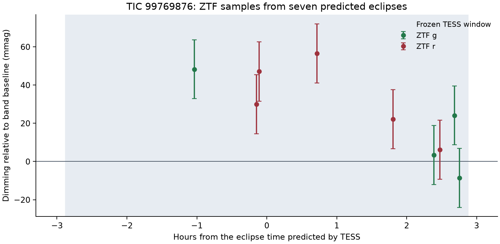

Recurring eclipse · companion unresolved
TIC 99769876
Nine ground-based ZTF measurements across seven predicted eclipse windows showed 2.27% average dimming. TESS provided the 19.086-day timing prediction.
Read the eclipse analysis ↗